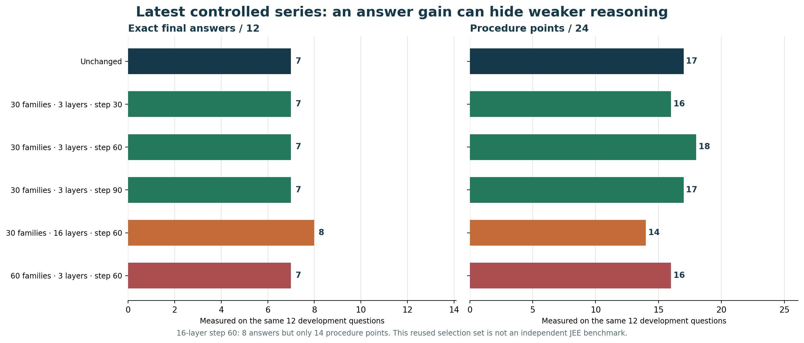

0.8B browser demo
The model downloads from Hugging Face and runs on your device through WebGPU. Your questions and screenshots are processed in this browser. No sign-in, inference API or local server is needed.
A browser workspace for JEE Main and Advanced. Bring a question, follow the working, and check the result. Explore the models, mistakes, and experiments behind it.
9B model + five archived checkpointsDesktop WebGPU preview · 0.8B optionModel details ↗
Exploratory output from the selected browser model. Check every scientific step before relying on it.
A family is a source problem plus its teaching exercises. Layers are the blocks given adapter updates. Step counts optimizer updates. These are five archived snapshots, not every training step.
No account. No API key. No local server.
We do not upload your question to our server; model files come from Hugging Face.
The solver is a research preview. It can make confident mistakes, especially on Advanced multi-step questions.
Compare the unchanged 9B base with five experimental checkpoints, or use the smaller separate demo.
The model downloads from Hugging Face and runs on your device through WebGPU. Your questions and screenshots are processed in this browser. No sign-in, inference API or local server is needed.
Our original compressed 9B weights now run through a custom ONNX Runtime WebGPU engine with a Transformers.js tokenizer. Switch among five archived adapters without downloading another full model. These are not all historical training steps.
View the actual adapter archive ↗18 CPU and 10 Chrome synthetic comparisons matched original-model token outputs. The original model still fails the two image fixtures. This is an engineering check, not JEE accuracy. Tested on a 64 GiB Mac; phone compatibility is unverified.
Read the export status ↗A browser-side structure around the model, designed for readable work rather than a bare answer.
Subject, exam, expected answer type and possible thermodynamics sign conventions become explicit before generation.
The prompt asks for givens, a short subgoal plan, essential calculations and all requested branches.
The page checks requested sections and runs a separate calculation for one simple kinematics pattern. Other mathematical steps remain unverified.
This first browser harness does not yet have a general symbolic checker or calculator. Those are research tasks, and the original MLX adapters require our converted graphs and custom browser runtime.
The browser release preserves the 9B training experiments and keeps the separate 0.8B demo available. The archive shows the actual checkpoints and what each taught us.
Our latest controlled studies changed training families and LoRA layer coverage. Some outputs improved, others regressed; none passed the full selection rule.

